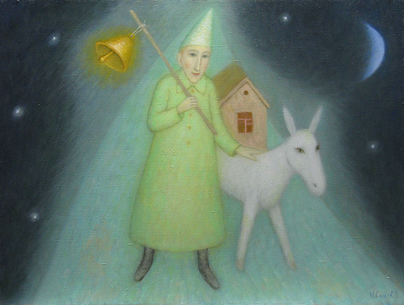
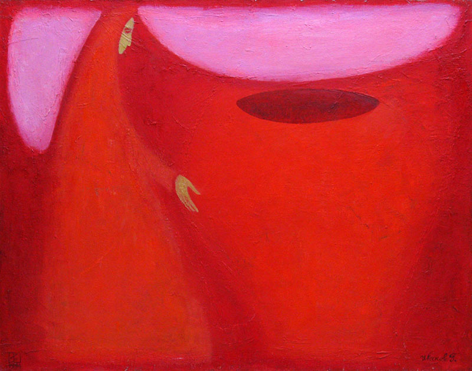
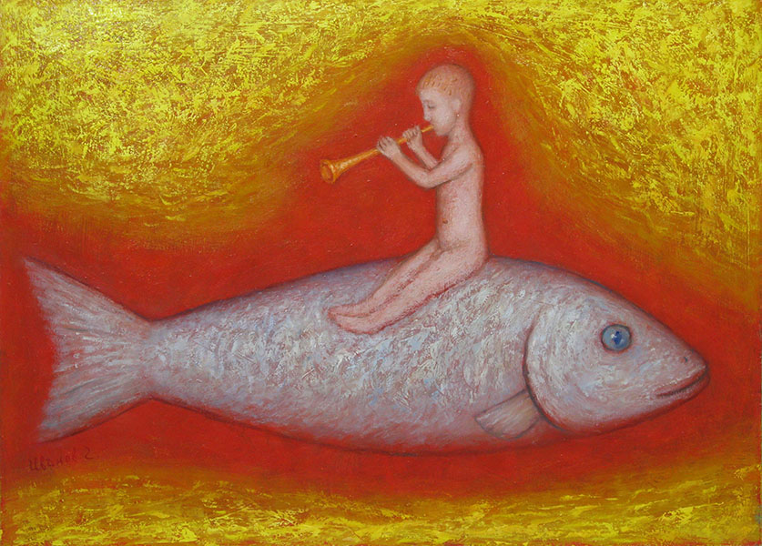
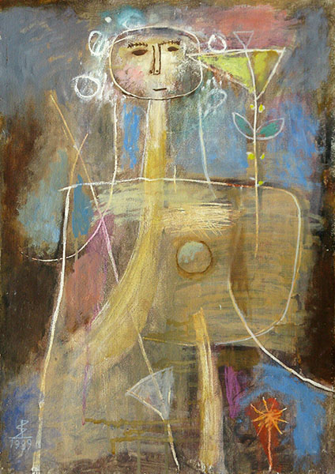
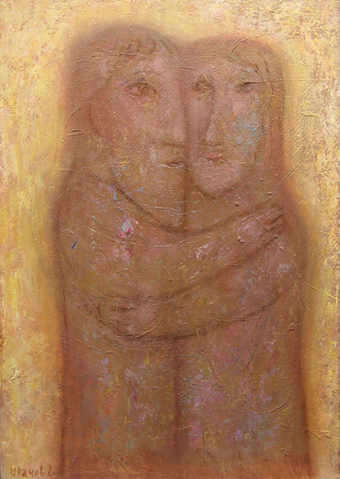
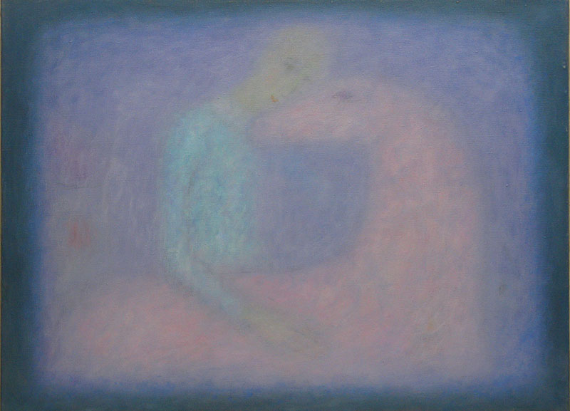
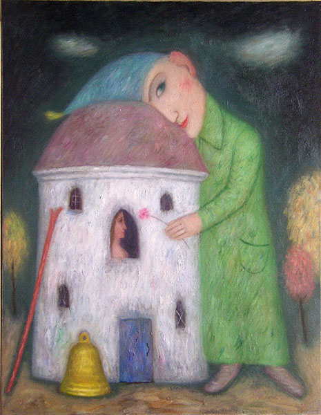
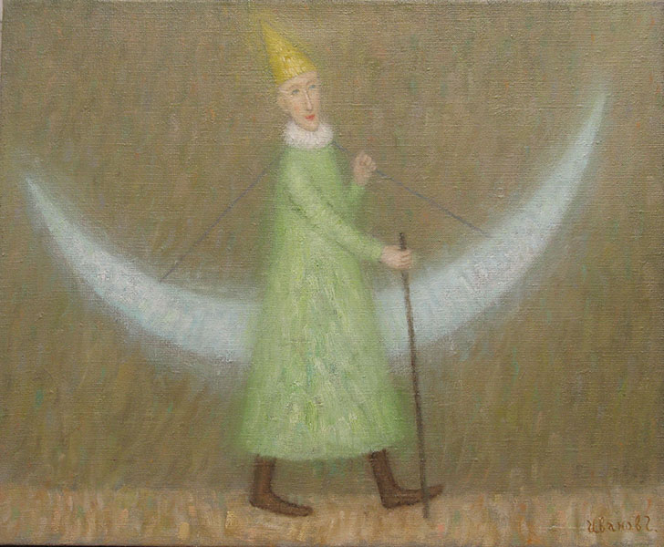
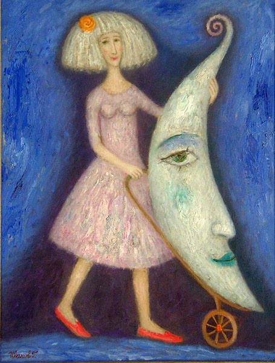

Как было сказано выше, общий стиль живописи Григория Иванова (до 2010г.) близок к примитивизму и детскому рисунку. Картины напоминают также иллюстрации к литературным произведениям: легендам, сказкам, мифам.
Они написаны как будто умным не по возрасту ребенком лет пяти-шести, начитавшимся книжек с картинками.
Метод создания этих «сказочных» картин можно было бы назвать «раскраской»: на плоскости холста появляется контурный рисунок двух-трёх форм (людей, животных и др.) Затем каждая фигура и фон покрываются однотонным слоем краски (иногда с оттенками). Мелкие детали обычно выделяются на фоне.
В результате картины при очень малом количестве форм производят впечатление живых и многоцветных. Вот, например, «Ловец рыбы» (2004г.): Фигур две, а красок на картине восемь. Или «Несущий свет»: фигур две, а красок шесть. Что же касается более сложных сюжетов — то здесь можно увидеть весь цветовой круг плюс ахроматические и земляные краски.

Пикник с единорогом
В работах светического стиля цвет и фактура стали единственными выразительными средствами Художника. Он отказался от предметности и обратил свой взгляд выше — к истокам небесного Света.
Но свет един и неделим. Как познать его? Как выразить его сущность?
Познание возможно через анализ. Чтобы изучить предмет (явление), нужно разъять его на части.
Сама природа показала нам состав белого света: он играет многоцветной радугой в небе после дождя, сверкает в каплях росы на траве, окружает цветным гало полную луну. В наше время можно любоваться спектральным многоцветием на компакт-дисках и голограммах.
Григорий Иванов создал живописный ансамбль основных спектральных цветов: для каждого цвета отдельный холст. Все вместе они играют симфонию белого.
Форма и сюжет — это слова легенд и сказок Григория Иванова, цвет — их музыка. В ахроматической репродукции картины теряют всё своё обаяние. Здесь цвет — средство передачи мысли, раскрытия образа.
Григорий Иванов — смелый колорист. Он создаёт цветовые композиции, не оглядываясь на классические нормы и академические каноны. Он умеет их нарушать ради выразительности, суггестивности сюжета. При этом он тонко понимает особенности психологического воздействия того или иного цвета.
Вот характерные примеры.
Цвет радости, бодрости, веселья:

Мой путь

Радость
Веселая мишура
Цвет скорби, страдания, раскаяния, печали:
At the Crucifixion

Возвращение блудного сына

Светлый день

Старый дом
Цвет экстаза, страсти, чрезмерности чувств:

У Чугуна
Солнышко
Трубач
Борьба со змеем

Городской роман
Свет очага

Фокусник

Музыка детства
Цвет тайны, мистического тумана, божественного откровения:
Поющий ангел
Розовый свет
Сквозное пространство
Золотой мост

Лиловый источник
Парящий ангел
Цвет иронии и сарказма:
Пикник с единорогом
Две фигуры

Невеста

Адам и Ева

Серенада для розы
Параллельный мир
Несогласованность сюжета и колорита:

Конь короля
Мост любви
Рогнеда
Девушка с жемчужиной
(Диссонанс может быть не ошибкой, а запрограммированным художественным приёмом).
Чистый лиризм:
Воспоминания о деревне

Двое
Прикосновение

Хранитель сновидений

Привал у белой башни

Ангел над домом

Прогулка с луной

Девушка с луной
Искусство Григория Иванова — светлое, негромкое, задумчивое,
грустно- улыбчивое. Такое искусство необходимо в наше время
тревог и суеты. Оно внушает надежду в Добро и Свет.
Л. Миронова,
17.03.2011